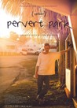
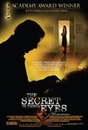
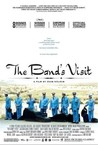
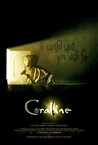
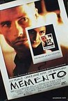

Movie Releases By Score

|
1101.
Incredibles 2
Release Date:
June 15, 2018

14 years after the original, everyone’s favorite family of superheroes is back in Incredibles 2 – but this time Helen (Holly Hunter) is in the spotlight, leaving Bob (Craig T. Nelson) at home with Violet (Sarah Vowell) and Dash (Huck Milner) to navigate the day-to-day heroics of “normal” life. It’s a tough transition for everyone, made tougher by the fact that the family is still unaware of baby Jack-Jack’s emerging superpowers. When a new villain hatches a brilliant and dangerous plot, the family and Frozone (Samuel L. Jackson) must find a way to work together again—which is easier said than done, even when they’re all Incredible.
|

|
1102.
Gleason
Release Date:
July 29, 2016
At the age of 34, former New Orleans Saints defensive back Steve Gleason was diagnosed with ALS and given a life expectancy of two to five years. Weeks later, Gleason found out his wife, Michel, was expecting their first child. A video journal that began as a gift for his unborn son expands to chronicle Steve’s determination to get his relationships in order, build a foundation to provide other ALS patients with purpose, and adapt to his declining physical condition—utilizing medical technologies that offer the means to live as fully as possible.
|
1103.
Casino Royale
Release Date:
November 17, 2006

After earning his license to kill, James Bond's first 007 mission takes him to Madagascar where he is to spy on a terrorist. Not everything goes as planned and Bond decides to investigate, independently of MI6. Following a lead to the Bahamas, he encounters Alex Dimitrios (Simon Abkarian) and his girlfriend, Solange (Caterina Murino). He learns that Dimitrios is involved with Le Chiffre (Mads Mikkelsen), banker to the world's terrorist organizations. Intelligence reveals that Le Chiffre is planning to raise money in a high-stakes poker game in Montenegro at Le Casino Royale. MI6 assigns 007 to play against him, knowing that if Le Chiffre loses, it will destroy his organization, but Bond falls in love with Vesper Lynd (Eva Green), the treasury employee assigned to provide the money he needs to bankrupt Le Chiffre.
|
|

|
1104.
Concerning Violence
Release Date:
December 5, 2014
From the director of The Black Power Mixtape comes a bold and fresh visual narrative on Africa, based on newly discovered archive material covering the struggle for liberation from colonial rule in the late '60s and '70s, accompanied by text from Frantz Fanon's The Wretched of the Earth. [Kino Lorber]
|

|
1105.
A Clockwork Orange
Release Date:
December 20, 1971
Kubrick makes of Anthony Burgess' celebrated novel a savage and satiric morality play centering on Alex (McDowell), who fights, robs, rapes and kills like any concsienceless predator. Captured and imprisoned, he undergoes treatment to condition him "safe", a "clockwork orange" healthy and whole on the outside - but crippled within by reflex mechanisms beyond his control. (Warner Bros.)
|
1106.
Cinema Paradiso
Release Date:
March 1, 1990
Set in an Italian village, Salvatore finds himself enchanted by the flickering images at the Cinema Paradiso, yearning for the secret of the cinema’s magic. When the projectionist, Alfredo, agrees to reveal the mysteries of moviemaking, a deep friendship is born. The day comes for Salvatore to leave the village and pursue his dream of making movies of his own. Thirty years later he receives a message that beckons him back home to a secret and beautiful discovery that awaits him. [Miramax]
|
|

|
1107.
The Strange Little Cat
Release Date:
August 1, 2014
A seemingly unspectacular family get-together becomes an exciting choreography of the everyday.
|

|
1108.
Saraband
Release Date:
July 8, 2005

In this sequel to Bergman's 1973 film "Scenes from a Marriage," Marianne and Johan meet again after thirty years without contact, when Marianne suddenly feels a need to see her ex-husband again. She decides to visit Johan at his old summer house in the western province of Dalarna. And so, one beautiful autumn day, there she is, beside his reclining chair, waking him with a light kiss. (Sony Pictures Classics)
|

|
1109.
On the Beach at Night Alone
Release Date:
November 17, 2017
Art imitates life in this quietly devastating masterpiece from Hong Sangsoo. Kim Minhee (The Handmaiden, Right Now, Wrong Then)—in the role that won her the Silver Bear for best actress in Berlin—plays Younghee, an actress reeling in the aftermath of an affair with a married film director. Younghee visits Hamburg then returns to Korea, but as she meets with friends and has her fair share to drink, increasingly startling confessions emerge. No stranger to mining his own experience for his films, Hong, whose real-life affair with Kim stirred up a media frenzy in Korea, here confronts his personal life with a newfound emotional directness. [The Cinema Guild]
|
1110.
Nossa Chape
Release Date:
June 1, 2018
Nossa Chape tracks the rebuilding of the Chapecoense football club in Brazil after a November 28, 2016 airplane crash left only three players alive. Through exclusive access to the families of the deceased, the new team and three severely injured recovering players, the documentary investigates the community’s many challenges in the aftermath of tragedy. The town finds itself divided by a desire to respect the memory of those they lost while also preparing to move the club into its future. The citizens and team must find a way to unite around a common identity.
|
|
|  |
1111.
Pervert Park
Release Date:
May 20, 2016
Pervert Park follows the everyday lives of the sex offenders in the park as they struggle to reintegrate into society.
|

|
1112.
Arabian Nights: Volume 1, The Restless One
Release Date:
December 4, 2015
In which Scheherazade tells of the restlessness that befell the country: It hath reached me, O auspicious King, that in a sad country among all countries, where people dream of mermaids and whales, and unemployment is spreading. In certain places, forests burn into the night despite the falling rain; men and women long to set out to sea in the middle of winter. Sometimes there are animals that talk although it is highly improbable that they are listened to. In this country, where things are not what they appear to be, men of power promenade on camels and hide permanent and shameful erections; they await the moment when taxes are collected so they can pay a certain wizard whom... And seeing the morning break, Scheherazade fell silent. [Kino Lorber]
|

|
1113.
Love & Mercy
Release Date:
June 5, 2015
A chronicle of reclusive Beach Boys songwriter and musician Brian Wilson's life, from his successes with highly-influential orchestral pop albums to his nervous breakdown and subsequent encounter with controversial therapist Dr. Eugene Landy.
|

|
1114.
Nine Lives
Release Date:
October 14, 2005
Nine Lives is a moving exploration of the individual experiences of nine women as told through nine single unbroken takes. As characters from one story reappear in supporting roles in others, Rodrigo Garcia interweaves a grand tapestry of universal resonance that hinges on performances from an incredible ensemble. (Magnolia Pictures)
|

|
1115.
Charlie: The Life and Art of Charles Chaplin
Release Date:
February 13, 2004
The title says it all.
|
1116.
Gimme Shelter (re-release)
Release Date:
August 11, 2000
This re-release of the 1970 classic documentary chronicles the Rolling Stones' American tour, culminating in the violence and death at the Altamont concert.
|
|

|
1117.
Wild Reeds
Release Date:
May 10, 1995
At a boarding school in the south of France in 1962, Maite, Francois, Serge and Henri explore friendship, sexuality and love at the end of the Algerian War.
|

|
1118.
A Bronx Tale
Release Date:
September 23, 1993
A young man grows up with his loyalties torn between his father and the mob boss who runs the streets.
|
1119.
Bugsy
Release Date:
December 20, 1991
The story of how Benjamin "Bugsy" Siegel started Las Vegas.
|
|

|
1120.
Cabaret
Release Date:
February 13, 1972
Inside the Kit Kat Club of 1931 Berlin, starry-eyed singer Sally Bowles (Minnelli) and an impish emcee (Grey) sound the clarion call to decadent fun, while outside a certain political party grows into a brutal force. (Warner Bros.)
|

|
1121.
Peter and the Farm
Release Date:
November 4, 2016
Peter Dunning is the proud proprietor of Mile Hill Farm, which sits on 187 acres in Vermont. The land’s 38 harvests have seen the arrivals and departures of three wives and four children, leaving Peter with only animals and memories. The arrival of a film crew causes him to confront his history and his legacy, passing along hard-won agricultural wisdom even as he doubts the meaning of the work he is fated to perform until death. Haunted by alcoholism and regret, Peter veers between elation and despair, often suggesting to the filmmakers his own suicide as a narrative device. He is a tragedian on a stage it has taken him most of his life to build, and which now threatens to collapse from under him.
|

|
1122.
True Grit
Release Date:
December 22, 2010
Fourteen-year-old Mattie Ross's father has been shot in cold blood by the coward Tom Chaney, and she is determined to bring him to justice. Enlisting the help of a trigger-happy, drunken U.S. Marshal, Rooster Cogburn, she sets out with him -- over his objections -- to hunt down Chaney. Her father's blood demands that she pursue the criminal into Indian territory and find him before a Texas Ranger named LeBoeuf catches him and brings him back to Texas for the murder of another man. (Paramount Pictures)
|

|
1123.
Mystery Train
Release Date:
November 17, 1989
Three stories are connected by a Memphis hotel and the spirit of Elvis Presley.
|

|
1124.
Prince of the City
Release Date:
August 21, 1981
A New York City narcotics detective (Treat Williams) reluctantly agrees to cooperate with a special commission investigating police corruption. However, he soon discovers that he's in over his head, and nobody can be trusted.
|
|  |
1125.
The Secret in Their Eyes
Release Date:
April 16, 2010
Recently retired criminal court investigator Benjamin, decides to write a novel based on a twenty-five year old unresolved rape and murder case, which still haunts him. Sharing his plans with Irene, the beautiful judge and former colleague he has secretly been in love with for years, Benjamin’s initial involvement with the case is shown through flashbacks, as he sets out to identify the murderer. But Benjamin’s search for the truth will put him at the center of a judicial nightmare, as the mystery of the heinous crime continues to unfold in the present, testing the limits of a man seeking justice and personal fulfillment at last. (Sony Pictures Classics)
|

|
1126.
Bigger Stronger Faster*
Release Date:
May 30, 2008
In America, we define ourselves in the superlative: we are the biggest, strongest, fastest country in the world. We reward speed, size and above all else: winning – at sport, at business and at war. Metaphorically we are a nation on steroids. Is it any wonder that so many of our heroes are on performance enhancing drugs? Blending comedy and pathos, Bigger, Stronger, Faster* is a collision of pop culture and first-person narrative, with a diverse cast including US Congressmen, professional athletes, medical experts and everyday gym rats. At its heart, this is the story of director Christopher Bell and his two brothers, who grew up idolizing muscular giants like Hulk Hogan, Sylvester Stallone and Arnold Schwarzenegger, and who went on to become members of the steroid-subculture in an effort to realize their American dream. When you discover that your heroes have all broken the rules, do you follow the rules, or do you follow your heroes? (Magnolia)
|

|
1127.
Bending the Arc
Release Date:
October 6, 2017
A powerful documentary about the extraordinary team of doctors and activists —including Paul Farmer, Jim Yong Kim, and Ophelia Dahl —whose work 30 years ago to save lives in a rural Haitian village grew into a global battle in the halls of power for the right to health for all. [Abramorama]
|

|
1128.
What Richard Did
Release Date:
May 10, 2013
The world is bright and everything seems possible for Richard Karlsen, the golden boy of a privileged set of Dublin teens, until he does something that destroys it all and shatters the lives of the people closest to him. Featuring extraordinary performances from its largely young cast, What Richard Did is a quietly devastating study of a boy confronting the gap between who he thought he was and who he proves to be. [Tribeca Film]
|

|
1129.
I Wish
Release Date:
May 11, 2012
Twelve-year-old Koichi lives with his mother and retired grandparents in Kagoshima, in the southern region of Kyushu, Japan. His younger brother Ryunosuke lives with their father in Hakata, northern Kyushu. The brothers have been separated by their parents’ divorce and Koichi’s only wish is for his family to be reunited. When he learns that a new bullet train line will soon open, linking the two towns, he starts to believe that a miracle will take place the moment these new trains first pass each other at top speed. With help from the adults around him, Koichi sets out on a journey with a group of friends, each hoping to witness a miracle that will improve their difficult lives.(Magnolia Pictures)
|

|
1130.
Iris
Release Date:
April 29, 2015
Iris pairs legendary 87-year-old documentarian Albert Maysles with Iris Apfel, the quick-witted, flamboyantly dressed 93-year-old style maven who has had an outsized presence on the New York fashion scene for decades. More than a fashion film, the documentary is a story about creativity and how a soaring free spirit continues to inspire. IRIS portrays a singular woman whose enthusiasm for fashion, art and people are life's sustenance and reminds us that dressing, and indeed life, is nothing but an experiment. Despite the abundance of glamour in her current life, she continues to embrace the values and work ethic established during a middle-class Queens upbringing during the Great Depression. [Magnolia Pictures]
|

|
1131.
Good Time
Release Date:
August 11, 2017
After a botched bank robbery lands his younger brother in prison, Constantine Nikas (Robert Pattinson) embarks on a twisted odyssey through the city’s underworld in an increasingly desperate—and dangerous—attempt to get his brother out of jail. Over the course of one adrenalized night, Constantine finds himself on a mad descent into violence and mayhem as he races against the clock to save his brother and himself, knowing their lives hang in the balance.
|

|
1132.
Last Men in Aleppo
Release Date:
May 3, 2017
Last Men in Aleppo follows the efforts of the internationally recognized White Helmets, an organization comprised of ordinary citizens who are the first to rush towards explosions in the hope of saving lives. Incorporating moments of both heart-pounding suspense and improbable beauty, the documentary draws us into the lives of three of its founders – Khaled, Subhi, and Mahmoud – as they grapple with the chaos around them and struggle with an ever-present dilemma: do they flee with their families or stay and fight for their country.
|

|
1133.
Henry: Portrait of a Serial Killer
Release Date:
January 5, 1990
Henry (Michael Rooker) is a psychopathic drifter who has coldly murdered a number of people for no particular reason and without any remorse. Leaving scores of bodies in his wake, Henry makes his way to Chicago, where his murderous streak continues and he settles into the rundown apartment of his drug-dealing former prison friend Otis (Tom Towles). Also moving into the space is Otis’s younger sister Becky (Tracy Arnold), who is fleeing from her abusive husband. Henry soon reveals his troubled childhood background to Becky, which resulted in Henry’s murder of his mother, the crime that landed him in prison. Unbeknownst to Becky, Henry continues to commit a series of random killings along with Otis, who has quickly developed a taste for murder. [Dark Sky Films]
|

|
1134.
Spellbound
Release Date:
April 30, 2003
This documentary presents the intense, true-life experience of the National Spelling Bee as seen through the eyes of eight driven, young spellers. (ThinkFilm)
|

|
1135.
Rabbit-Proof Fence
Release Date:
November 29, 2002
The true story of Molly Craig, a young black Australian girl who leads her younger sister and cousin in an escape from an internment camp, set up as a part of a government policy to train Aboriginal children as domestic workers and integrate them into white society. (Miramax)
|

|
1136.
Big Night
Release Date:
September 20, 1996
The story of two Italian brothers, Primo (Tony Shalhoub) and Secondo (Stanley Tucci), who immigrated to America with the dream of running a successful restaurant. As their business struggles, they pin all of their hopes on a lavish banquet honoring star vocalist Louis Prima, who a friend has promised to bring to the restaurant.
|
1137.
A Room with a View
Release Date:
April 1, 1986
Based on E.M. Forster's novel, Lucy, a young English woman (Bonham Carter), and her aunt (Smith) travel to Florence in the early 1900's. When Lucy encounters a British gentleman in Italy and finds herself falling in love, she must choose between him and her fiancé back in England.
|
|

|
1138.
The Sting
Release Date:
December 25, 1973
In Chicago of September 1936, a young con man seeks revenge for his murdered by teaming up with a master of the big con to win a fortune from a criminal banker.
|

|
1139.
Going Clear: Scientology and the Prison of Belief
Release Date:
March 13, 2015
Alex Gibney profiles eight former members of the Church of Scientology, whose most prominent adherents include A-list Hollywood celebrities, shining a light on how the church cultivates true believers, including their experiences and what they are willing to do in the name of religion. The film covers a broad range of material from the church's origins—punctuated by an intimate portrait of founder L. Ron Hubbard—to present-day practices and alleged abuses as reported in the media. [Sundance]
|

|
1140.
White God
Release Date:
March 27, 2015
When young Lili is forced to give up her beloved dog Hagen, because it's mixed-breed heritage is deemed unfit by The State, she and the dog begin a dangerous journey back towards each other. At the same time, all the unwanted, unloved and so-called unfit dogs rise up under a new leader, Hagen, the one-time housepet who has learned all too well from his journey through the streets and animal control centers. [Magnolia Pictures]
|

|
1141.
My Dog Tulip
Release Date:
September 1, 2010
The distinguished British man of letters, Ackerley hardly thought of himself as a dog lover when, well into middle age, he came to adopt Tulip – a beautiful, yet intolerable 18-month-old German shepherd. To his surprise, she turned out to be the love of his life, the “ideal friend” he had been searching for in vain for so many years. In vivid and sometimes startling detail, the film reveals Tulip’s sassy, often erratic behavior (and very canine tastes) and Ackerley’s fumbling but determined efforts to ensure an existence of perfect happiness for her. (New Yorker Films)
|

|
1142.
I Am Not a Witch
Release Date:
September 7, 2018
Following a banal incident in her local village, 8-year old girl Shula is accused of witchcraft. After a short trial she is found guilty, taken into state custody and exiled to a witch camp in the middle of a desert. At the camp she takes part in an initiation ceremony where she is shown the rules surrounding her new life as a witch. Like the other residents, Shula is tied to a ribbon which is attached to a coil that perches in a large tree. She is told that should she ever cut the ribbon, she'll be cursed and transformed into a goat.
|

|
1143.
Once Upon a Time in the West (re-release)
Release Date:
September 30, 2005
Sergio Leone's monumental epic is as big as its Monument Valley locations, as grand as its fine, distinguished cast, as tough and bawdy as every kid imagines the Old West. (Paramount)
|

|
1144.
Central Station
Release Date:
November 20, 1998
A young boy's (Oliveira) mother is killed in front of Rio de Janeiro's Central Station. Homeless and with nowhere to turn, he is reluctantly befriended by a lonely and cynical woman (Montenegro). Resisting her initial impulse to make a quick profit off the child, she commits to returning him to his father in Brazil's remote Northeast. The trip becomes a quest for their own identities: one boy's search for his father, and one woman's search for her heart. (Sony Pictures Classics)
|

|
1145.
Whale Rider
Release Date:
June 6, 2003
A contemporary story of love, rejection and triumph as a young Maori girl fights to fulfill her destiny. (South Pacific Pictures)
|

|
1146.
The Mill and the Cross
Release Date:
September 14, 2011
Pieter Bruegel’s epic masterpiece The Way To Calvary depicts the story of Christ’s Passion set in Flanders under brutal Spanish occupation in the year 1564, the very year Bruegel created his
painting. From among the more than five hundred figures that fill Bruegel’s remarkable canvas, The Mill & The Cross focuses on a dozen characters whose life stories unfold and intertwine in a panoramic landscape populated by villagers and red-caped horsemen. Among them are Bruegel himself, his friend and art collector Nicholas Jonghelinck, and the Virgin Mary. (Silesia Film)
|

|
1147.
Lean on Pete
Release Date:
April 6, 2018
Fifteen-year-old Charley Thompson (Charlie Plummer) arrives in Portland, Oregon with his single father Ray (Travis Fimmel), both of them eager for a fresh start after a series of hard knocks. While Ray descends into personal turmoil, Charley finds acceptance and camaraderie at a local racetrack where he lands a job caring for an aging Quarter Horse named Lean On Pete. The horse’s gruff owner Del Montgomery (Steve Buscemi) and his seasoned jockey Bonnie (Chloë Sevigny) help Charley fill the void of his father’s absence—until he discovers that Pete is bound for slaughter, prompting him to take extreme measures to spare his new friend’s life. Charley and Pete head out into the great unknown, embarking on an odyssey across the new American frontier in search of a loving aunt Charley hasn’t seen in years. They experience adventure and heartbreak in equal measure, but never lose their irrepressible hope and resiliency as they pursue their dream of finding a place they can call home.
|
1148.
Claire's Camera
Release Date:
March 9, 2018
A refreshingly sunny performance from Isabelle Huppert is at the center of this comic charmer from South Korean master Hong Sangsoo. Huppert plays Claire, a school teacher with a camera (that might be magical) on her first visit to Cannes. She happens upon a film sales assistant, Manhee (Kim Minhee), recently laid off after a one-night stand with a film director (Jung Jinyoung). Together, this unlikely pair become detectives of sorts, as they wander around the seaside resort town, working to better understand the circumstances of Manhee's firing—and developing new outlooks on life in the process. [Cinema Guild]
|
|
|
|
1149.
Sunset Story
Release Date:
February 4, 2005
Sunset Story is a funny and intimate documentary drama that will make you think differently about growing old. Set against the backdrop of a retirement home for political progressives, the film goes inside the world of two women, Irja (81) and Lucille (95), whose feisty engagement with life draws them together inextricably. (Gabbert/Libresco Productions)
|

|
1150.
All the President's Men
Release Date:
April 9, 1976
In the Watergate Building on June 17, 1972, lights go on and four burglars are caught breaking into the offices of the Democratic National Headquarters. That night triggered revelations that would eventually drive a U.S. President from office. Washington Post reporters Bob Woodward (Robert Redford) and Carl Bernstein (Dustin Hoffman) grabbed the initial break-in story and stayed with it through doubts, denials and discouragement. [Warner Bros.]
|

|
1151.
Howl's Moving Castle
Release Date:
June 10, 2005
An amazing new animated adventure that celebrates the power of love to transform and the resiliency of the human spirit in the face of adversity. (Disney)
|

|
1152.
The Simpsons Movie
Release Date:
July 27, 2007
It takes a wide screen to fully capture Homer Simpson's stupidity, and The Simpsons Movie does it. In the eagerly-awaited animated feature film based on the hit TV series, Homer must save the world from a catastrophe he himself created. (20th Century Fox)
|

|
1153.
Off the Rails
Release Date:
November 4, 2016
Off the Rails tells the remarkable true story of Darius McCollum, a man with Asperger’s syndrome whose overwhelming love of transit has landed him in jail 32 times for impersonating New York City bus drivers and subway conductors and driving their routes. As a boy in Queens, NY, Darius found sanctuary from school bullies in the subway. There he befriended transit workers who taught him to drive trains. By age 8, he memorized the entire subway system. At 15, he drove a packed train 8 stops by himself, making all the stops and announcements. Over the next three decades, Darius commandeered hundreds of trains and buses, staying en route and on schedule, without ever getting paid. He attended transit worker union meetings, lobbying for better pay and working conditions for a union he didn’t belong to. Although Darius has never damaged any property or hurt anyone in his decades of service, he has spent 23 years in maximum security prison. Darius’ recidivism embodies the criminal justice system’s failure to channel the passions of a harmless, mentally challenged man into a productive career and purposeful life.
|

|
1154.
Riding Giants
Release Date:
July 9, 2004
This documentary takes viewers along surfing's timeline, highlighting the group of extraordinary adventurers that emerged: surfers who, not satisfied with the mere recreational and social aspects of the sport, began searching for bigger and bigger waves, pushing the boundaries of performance to explore the "unridden realm." (Sony Pictures Classics)
|
|
|
1155.
Jung (War) in the Land of the Mujaheddin
Release Date:
November 23, 2001
Jung is a narrative documentary that follows the human and professional adventure of its protagonists, the Afghan people in the midst of civil war.
|

|
1156.
Set Me Free
Release Date:
April 14, 2000
Set in 1963 Montreal, Lea Pool's coming-of-age story examines the life of a 13-year-old girl (Vanasse) who escapes her life as the illegitimate daughter of a struggling Jewish writer and a Catholic seamstress through her love of films. She adopts an unlikely role model in the prostitute heroine of Godard's "Vivre sa vie."
|

|
1157.
Boy and the World
Release Date:
December 11, 2015
Cuca lives a life of quiet wonder, exploring all that the countryside has to offer. But his cozy life is shattered when his father leaves for the city, prompting him to embark on a quest to reunite his family. The young boy’s journey unfolds like a tapestry, the animation taking on greater complexity and variety as his small world expands. Simple line drawings of the village give way to broad brushstrokes forming giant bushels of cotton lining country roads and sweeps of pastel churned into roaring waves. Approaching the city, industrial landscapes are inhabited by animal-machines, whirling carnival colors and exploding fireworks fill the sky above decoupage favelas, while flashing neon advertisements and garish shop windows illuminate the night. [GKIDS]
|
1158.
Babylon
Release Date:
March 8, 2019
Never-before released in North America, Franco Rosso's incendiary Babylon had its world premiere at Cannes in 1980 but was banned from the New York Film Festival that same year for "being too controversial, and likely to incite racial tension" (Vivien Goldman, Time Out). Raw and smoldering, it follows a young dancehall DJ (Brinsley Forde, frontman of landmark British reggae group Aswad) in South London as he pursues his musical ambitions, battling fiercely against the racism and xenophobia of employers, neighbors, police, and the National Front. Written by Martin Stellman (Quadrophenia) and shot by two-time Oscar® winner Chris Menges (The Killing Fields) with beautifully smoky cinematography that has been compared to Taxi Driver, Babylon is fearless and unsentimental, yet tempered by the hazy bliss of the dancehall set to a blistering reggae and lovers rock soundtrack featuring Aswad, Johnny Clarke, Dennis Bovell, and more. [Kino Lorber]
|
|

|
1159.
Finders Keepers
Release Date:
September 25, 2015
Shannon Whisnant has a nose for a bargain. But when he bought a used grill at a North Carolina auction, the severed human foot he found among its ashes was not part of the deal. Soon the gruesome discovery becomes the toast of the infotainment world, and the new owner spies a golden opportunity to cash in on the media frenzy, until struggling addict and amputee John Wood recognizes his missing member and demands his own foot back. It is the stuff of documentary legend. [Sundance]
|

|
1160.
Room 237
Release Date:
March 29, 2013
A documentary that explores the numerous theories about the hidden meanings within Stanley Kubrick's The Shining which continues to inspire debate, speculation, and mystery more than thirty years after its release. Using voice over, film clips, animation and dramatic reenactments, Room 237 investigates five very different points of view drawing the audience into a new maze, one with many ways in, but no way out.
|

|
1161.
Lady Chatterley
Release Date:
June 22, 2007
Based on D.H. Lawrence's "Lady Chatterley's Lover," this film tells the story of a passion that is both innocent and subversive - one that transcends, without ever ignoring, class and social conventions. (Kino International)
|

|
1162.
Lucky
Release Date:
September 29, 2017
Lucky follows the spiritual journey of a 90-year-old atheist and the quirky characters that inhabit his off the map desert town. Having out lived and out smoked all of his contemporaries, the fiercely independent Lucky (Harry Dean Stanton) finds himself at the precipice of life, thrust into a journey of self exploration, leading towards that which is so often unattainable: enlightenment.
|
|  |
1163.
The Band's Visit
Release Date:
February 8, 2008
The Alexandria Ceremonial Police Orchestra arrives in Israel to play at the opening of an Arab Cultural
Center. Dressed in full regalia and observing all military police protocol, the members of the orchestra are at a pivotal time in their careers. It’s not just the political nature of an Arab military police band playing
traditional Arab music in Israel that makes this event so important; budget cuts and many reorganizations
have threatened the continued existence of the Orchestra. Faced with the heavy burden of this assignment, the stoic conductor Tewfiq is determined not to foul their excursion. Despite all Tewfiqs efforts, it’s not long before problems arise. The band arrives at the airport with no one there to greet them. Stranded and unable able to contact their Israeli hosts or the Egyptian consulate for help, Tewfiq decides that the Orchestra will persevere with its assignment and orders, and designates Khaled, a sauve young ladies man, to ask for directions. Khaled and the station agent struggle in English, Arabic and Hebrew to communicate, but despite their best efforts, the Orchestra is sent to the outskirts of a small forgotten Israeli town in the desert. (Sony Classics)
|

|
1164.
Call Me Kuchu
Release Date:
June 14, 2013
In Uganda, a new bill threatens to make homosexuality punishable by death. David Kato - Uganda's first openly gay man - and his fellow activists work against the clock to defeat the legislation while combating vicious persecution in their daily lives. But no one, not even the filmmakers, is prepared for the brutal murder that shakes the movement to its core and sends shock waves around the world.
|
|  |
1165.
Coraline
Release Date:
February 6, 2009
A young girl walks through a secret door in her new home and discovers an alternate version of her life. On the surface, this parallel reality is eerily similar to her real life - only much better. But when this wondrously off-kilter, fantastical adventure turns dangerous, and her counterfeit parents (including Other Mother) try to keep her forever, Coraline must count on her resourcefulness, determination, and bravery to get back home - and save her family.m (Focus Features)
|

|
1166.
Berberian Sound Studio
Release Date:
June 14, 2013
1976. A mild-mannered British sound engineer named Gilderoy arrives in Rome to work on the post-synchronized soundtrack to The Equestrian Vortex, a tale of witchcraft and murder set inside an all-girl riding academy. But as Gilderoy begins to work on this unexpectedly terrifying project, it's his own mind that holds the real horrors. As the line between film and reality blurs, is Gilderoy working on a film - or in one? [IFC Films]
|

|
1167.
In the Mirror of Maya Deren
Release Date:
January 24, 2003
With this film, Martina Kudlacek has fashioned not only fascinating portrait of a groundbreaking and influential artist, but a pitch-perfect introduction to her strikingly beautiful and poetic body of work. (Zeitgeist Films)
|

|
1168.
Glengarry Glen Ross
Release Date:
September 29, 1992
A group of real estate salesmen in Chicago compete for the best "leads" at a small firm selling property in "resort" areas, such as Florida and Arizona. When a hotshot executive from the head office arrives and proposes a vicious sales contest, competition gets stiff, and salesmen who have worked a lifetime for the company find their jobs in jeopardy. [Artisan]
|

|
1169.
Tokyo Sonata
Release Date:
March 13, 2009
Tokyo Sonata is a portrait of a seemingly ordinary Japanese family. The father who abruptly loses his job conceals the truth from his family; the eldest son in college hardly returns home; the youngest son furtively takes piano lessons without telling his parents; and the mother, who knows deep down that her role is to keep the family together, cannot find the will to do so. From the exterior, all is normal and the same. But somehow, a single, unforeseeable chasm has appeared within the family, threatening to disintegrate them. Director Kurosawa’s use of light and dark to express a sense of simultaneous hope and horror verges on awe-inspiring and the ending will leave you enthralled. [Regent Releasing]
|

|
1170.
Lorenzo's Oil
Release Date:
December 30, 1992
A boy develops a disease so rare that nobody is working on a cure, so his father decides to learn all about it and tackle the problem himself.
|

|
1171.
Il Futuro
Release Date:
September 6, 2013
When her parents die in a tragic car accident, adolescent Bianca's universe is suspended. Entrusted with the care of her younger brother, Tomas, she struggles to hold it together. Life is further complicated when Tomas' gym-rat friends invite themselves to stay indefinitely. Using Bianca as a lure for a heist they've concocted, they convince her to initiate a sexual relationship with an enigmatic blind hermit, Maciste (Rutger Hauer). But as the two spend time together, Bianca unexpectedly finds normalcy and acceptance in the aging B-movie star and former Mr. Universe's rococo mansion. [Strand Releasing]
|

|
1172.
Tristram Shandy: A Cock and Bull Story
Release Date:
January 27, 2006
A zesty celebration of storytelling and the life that spills out of it, this film tells two stories: that of an 18th Century Englishman Tristram Shandy (Coogan), and that of the hapless 21st Century filmmakers who are adapting the notoriously unfilmable work "The Life and Opinions of Tristram Shandy, Gentleman," with "Steve Coogan" (COogan) in the title role. (Picturehouse)
|
1173.
Good Night, and Good Luck.
Release Date:
October 7, 2005
Good Night, and Good Luck chronicles that real-life conflict between esteemed television newsman Edward R. Murrow (Strathairn) and Senator Joseph McCarthy. (Warner Independent Pictures)
|
|

|
1174.
Broadway Danny Rose
Release Date:
January 27, 1984
In his attempts to reconcile a lounge singer with his mistress, a hapless talent agent is mistaken as her lover by a jealous gangster.
|

|
1175.
The Survivalist
Release Date:
May 19, 2017
A lone man strikes a bargain with two women as they fight to survive roving gangs and the harsh isolation of a kill-or-be-killed world.
|

|
1176.
The Pearl Button
Release Date:
October 23, 2015
The ocean contains the history of all humanity. The sea holds all the voices of the earth and those that come from outer space. Water receives impetus from the stars and transmits it to living creatures. Water, the longest border in Chile, also holds the secret of two mysterious buttons which were found on its ocean floor. Chile, with its 2,670 miles of coastline and the largest archipelago in the world, presents a supernatural landscape. In it are volcanoes, mountains and glaciers. In it are the voices of the Patagonian Indigenous people, the first English sailors and also those of its political prisoners. Some say that water has memory. This film shows that it also has a voice.
|

|
1177.
Deep Water
Release Date:
August 24, 2007
Deep Water is the stunning true story of the fateful voyage of Donald Crowhurst, an amateur yachtsman who entered the most daring nautical challenge ever: the very first solo, nonstop, round-the-world boat race. (IFC Films)
|
1178.
The Force
Release Date:
September 22, 2017
At a powderkeg moment in American policing, The Force goes deep inside the embattled Oakland Police Department as it struggles to reform itself amid growing local controversy. Winner of the Documentary Directing Award at the 2017 Sundance Film Festival, filmmaker Peter Nicks embedded with the department over the course of two years to follow its serial efforts to recast itself. The film focuses on the new chief brought in to effect reform at the very moment the Black Lives Matter movement emerges to demand police accountability and racial justice both in Oakland and across the nation. [Kiino Lorber]
|
|
1179.
Lorna's Silence
Release Date:
July 31, 2009
The destiny of a woman caught between love and the law of the underworld. Lorna, a young Albanian woman living in Belgium, has her sights set on opening a snack bar with her boyfriend, Sokol. In order to do so, she becomes an accomplice in a diabolical plan devised by mobster Fabio. Fabio has set up a false marriage between Lorna and Claudy allowing Lorna to get her Belgian citizenship. However, she is then asked to marry a Russian mafioso who's ready to pay hard cash to also get his hands on those vital Belgian identity papers. Fabio intends to kill Claudy in order to speed up the second marriage. But will Lorna remain silent? [Sony Pictures Classics]
|
|

|
1180.
California Typewriter
Release Date:
August 18, 2017
California Typewriter launches us into the bittersweet moment when a beloved technology, the typewriter, faces extinction. Delivering a thought-provoking view on the changing dynamic between humans and machines, director Doug Nichol explores the mythology attached to the classic typewriter, as cultural historians, collectors and various celebrity obsessives (including Tom Hanks, John Mayer, David McCullough, and Sam Shepard) celebrate the typewriter both as object and means of summoning the creative spirit. The film culminates in the movingly documented struggle of California Typewriter, one of the last standing repair shops in America dedicated to keeping the aging machines clicking.
|

|
1181.
The Shawshank Redemption
Release Date:
September 1, 1994
Wrongly convicted, Andy Dufresne (Tim Robbins) is sentenced to two consecutive life terms in in Maine's Shawshank prison for the murders of his wife and her lover. Set in the 1940's, the film shows how Andy learns to get by in the brutal confines of prison, even earning the respect of his fellow inmates, most notably the longtime convict "Red" Redding (Morgan Freeman).
|

|
1182.
The Day of the Jackal
Release Date:
July 30, 1973
A professional assassin codenamed "Jackal" plots to kill Charles de Gaulle, the President of France.
|

|
1183.
Gloria Bell
Release Date:
March 8, 2019
Gloria (Julianne Moore) is a free-spirited divorcée who spends her days at a straight-laced office job and her nights on the dance floor, joyfully letting loose at clubs around Los Angeles. After meeting Arnold (John Turturro) on a night out, she finds herself thrust into an unexpected new romance, filled with both the joys of budding love and the complications of dating, identity, and family. [A24]
|
|  |
1184.
Memento
Release Date:
March 16, 2001
Dismissed by the police, Leonard Shelby (Pearce) is obsessed with pursuing vengeance for the rape and murder of his wife. The difficulty of his quest is compounded by his rare, untreatable form of memory loss.
|

|
1185.
Young Frankenstein
Release Date:
December 15, 1974
The grandson of the infamous Dr. Frankenstein reluctantly decides to follow in his footsteps in this parody of horror films.
|

|
1186.
Demon
Release Date:
September 9, 2016
Newly arrived from England to marry his fiancée Zaneta (Agnieszk Zulewska), Peter (Itay Tiran) has been given a gift of her family’s ramshackle country house in rural Poland. It’s a total fixer-upper, and while inspecting the premises on the eve of the wedding, he falls into a pile of human remains. The ceremony proceeds, but strange things begin to happen. During the wild reception, Peter begins to come undone, and a dybbuk, the iconic ancient figure from Jewish folklore, takes a toehold in this present-day celebration for a very particular reason. [The Orchard]
|

|
1187.
Goodbye First Love
Release Date:
April 20, 2012
Fifteen-year-old Camille is a serious, intensely focused girl who has fallen in love with cheerful Sullivan, an older boy who reciprocates her feelings, mostly, but wants to be free to explore the world. When he leaves her to travel through South America, she is devastated. But over the next eight years, she develops into a more fully formed woman, with new interests and a new love—and the possibility that she'll be less defenseless when Sullivan enters her life again. Filled with scenes that showcase her extraordinary ability to evoke moods and feelings, Hansen-Løve takes the story of a girl’s first romance and makes it into a singular experience, familiar in its broad strokes and yet so specific that it feels uniquely personal. (IFC Films)
|

|
1188.
Little Miss Sunshine
Release Date:
July 26, 2006
Little Miss Sunshine is an American family road comedy that shatters the mold. Brazenly satirical and yet deeply human, the film introduces audiences to one of the most endearingly fractured families in recent cinema history: the Hoovers, whose trip to a pre-pubescent beauty pageant results not only in comic mayhem but in death, transformation and a moving look at the surprising rewards of being losers in a winning-crazed culture. (Fox Searchlight Pictures)
|

|
1189.
The Endless
Release Date:
April 6, 2018
Following their Lovecraftian modern cult classic Spring, acclaimed filmmakers Moorhead and Benson return with this mind-bending thriller that follows two brothers who receive a cryptic video message inspiring them to revisit the UFO death cult they escaped a decade earlier. Hoping to find the closure that they couldn’t as young men, they’re forced to reconsider the cult’s beliefs when confronted with unexplainable phenomena surrounding the camp. As the members prepare for the coming of a mysterious event, the brothers race to unravel the seemingly impossible truth before their lives become permanently entangled with the cult.
|
1190.
Indivisible
Release Date:
September 15, 2017
Daisy and Violet are twin sisters on the verge of turning 18. They are blessed with beautiful voices and are sought after to sing at weddings, communions and baptisms. Their real draw is another trait which cloaks them in fascinating charm: they are siamese twins. They support their family with their singing like a well oiled company/entertainment machine. This idyllic situation ends when a notable English doctor sees them at a first communion in Casertavecchia. He sentences them to the possibility of a normal life when he states, "I can separate you.".
|
|

|
1191.
Sweetgrass
Release Date:
January 6, 2010
In the summer of 2003, a group of shepherds took a herd of sheep one final time through the Beartooth Mountains of Montana, in the extreme northwest of the United States. It was a journey of almost 300 kilometers through expansive green valleys, by fields of snow, and across hazardous, narrow ridges. The aging shepherds do their very best to keep the hundreds of sheep together while the high mountains are teeming with hungry wolves and grizzly bears.
|

|
1192.
Another Year
Release Date:
December 29, 2010
In the Spring, happily married Gerri, a medical counselor, and Tom, a geologist, tend their allotment. They entertain Gerri's lonely work colleague Mary, and their community lawyer son Joe, throughout the year. [Sony Classics]
|

|
1193.
Liyana
Release Date:
October 10, 2018
Five Swazi orphaned children turn their past trauma into creative fuel for an original collective fairytale, in which they send a young girl on a dangerous quest.
|

|
1194.
The Old Man & the Gun
Release Date:
September 28, 2018
Forrest Tucker (Robert Redford) has been on the wrong side of the law since he was a teen. He grew into a career bank robber who broke out of prison 18 times, including a daring escape from San Quentin at age 70. The film covers his twilight years, and an unprecedented string of daring heists that confound authorities and enchants the public. Wrapped up in this chase are a detective (Casey Affleck) who becomes captivated with Forrest’s commitment to his craft, and a woman (Sissy Spacek) who loves him in spite of his chosen profession.
|

|
1195.
The Four Times (Le Quattro Volte)
Release Date:
March 30, 2011
Inspired by Pythagoras’s belief in four-fold transmigration — by which the soul is passed from human to animal to vegetable to mineral — Michelangelo Frammartino’s wondrous docu-essay traces the cycle of life through the daily rituals of life in the southern Italian region of Calabria. (Lorber Films)
|

|
1196.
The Last of the Unjust
Release Date:
December 13, 2013
A place: Theresienstadt. A unique place of propaganda which Adolf Eichmann called the "model ghetto", designed to mislead the world and Jewish people regarding its real nature, to be the last step before the gas chamber. A man: Benjamin Murmelstein, last president of the Theresienstadt Jewish Council, a fallen hero condemned to exile, who was forced to negotiate day after day from 1938 until the end of the war with Eichmann, to whose trial Murmelstein wasn't even called to testify. Even though he was without a doubt the one who knew the Nazi executioner best. More than twenty-five years after Shoah, Claude Lanzmann's new film reveals a little-known yet fundamental aspect of the Holocaust, and sheds light on the origins of the "Final Solution" like never before.
|

|
1197.
West of Memphis
Release Date:
December 25, 2012
An examination of a failure of justice in the case against the West Memphis Three.
|

|
1198.
The Great Buddha+
Release Date:
November 23, 2018
Pickle is a night security guard at a bronze statue factory. His colleague, Belly Bottom, works as a recycling collector during the day, and Pickle's biggest pleasure in life is flicking through the porn magazines Belly Bottom collects in the small hours in the security room. Having late night snacks and watching television are an integral part of their dull lives. One day when the television is broken, their lives are changed forever.
|

|
1199.
Wildlife
Release Date:
October 19, 2018
14-year-old Joe is the only child of Jeanette and Jerry—a housewife and a golf pro—in a small town in 1960s Montana. Nearby, an uncontrolled forest fire rages close to the Canadian border, and when Jerry loses his job—and his sense of purpose—he decides to join the cause of fighting the fire, leaving his wife and son to fend for themselves. Suddenly forced into the role of an adult, Joe witnesses his mother’s struggle as she tries to keep her head above water.
|
1200.
Arabian Nights: Volume 3, The Enchanted One
Release Date:
December 18, 2015
In which Scheherazade doubts that she will still be able to tell stories to please the King, given that what she has to tell weighs three thousand tons. She therefore escapes from the palace and travels the kingdom in search of pleasure and enchantment. Her father, the Grand-Vizier, arranges to meet her at the Ferris wheel and Scheherazade resumes her narration: O auspicious King, in old shanty towns of Lisbon there was a community of bewitched men who, with all dedication and passion, devoted themselves to teaching birds to sing... And seeing the morning break, Scheherazade fell silent. [Kino Lorber]
|
|